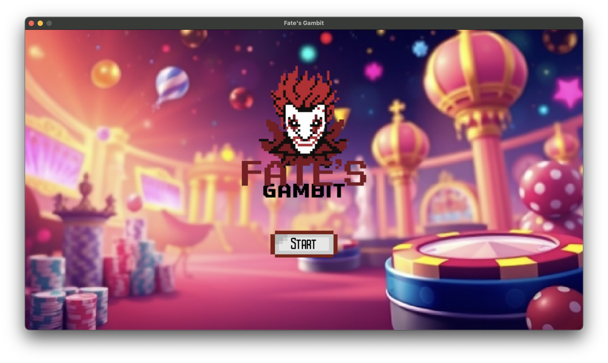
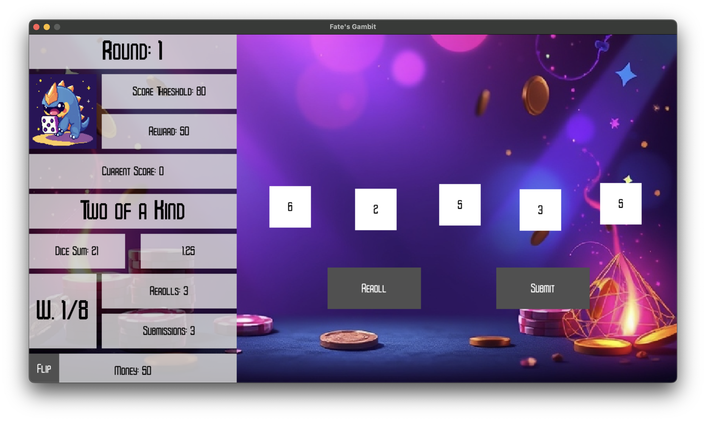

This project is developed by Evan Shi, Jerry Shi, and Pengyu Wang, written in D. It is developed for the course CPSC 511: Building a Game Engine.
Here is a YouTube video showcasing the engine and the game we made:
Below are a few images showing the demo game we made, called Fate's Gambit. The game's idea is from Evan Shi.
 